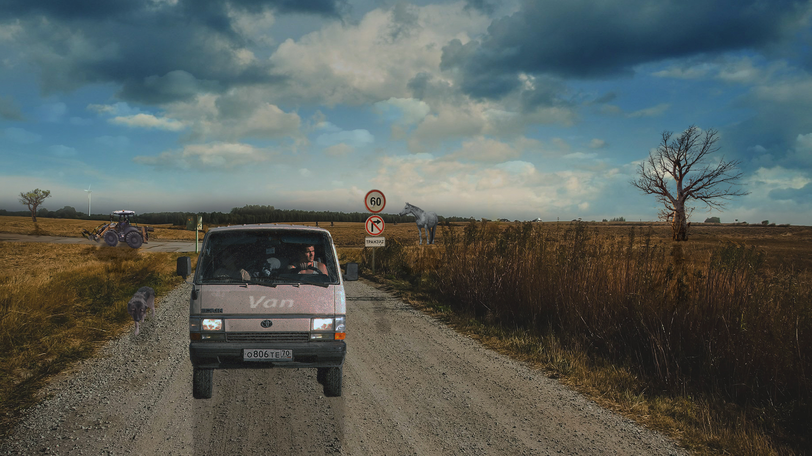

Prva sam godina na Grfaičkom fakultetu te samim tim imam kolegiji Dogitalni multimediji 1 te smo u sklopu kolegija dobivali niz zadtaka i projekata u raznim programima kao što su Photoshop, Illustrator, različiti programi za uređivanje videa itd. Tako da se tu nalaze neki od mojih radova.
Ovo su neki od radova koje sam radila u programu Photoshop uz pomoć različitih tehnika kao što su rešutiranje, koloriranje, dorada gifa itd. Meni je osobno najzanimljivije bilo raditi GIF, iako dio GIF-a smo radili i u programu za obradu videa, ali dio i u Photoshopu.
Illustrator spaada u program vektorske grafike te je bio prvi program koji smo naučili te je također bio zanimljiv, posebno jer smo mogli izraziti kreativu i razviti svoji stil. Naučili smo razne tehnike i alate kao što su brush, roate, scale, reflect, pen itd. Ovdje su linkovi i slike na neke od mojih radova u programu Illustrator.
PDF vježbi:
Slike vježbi:
Obradu videa sam radila u prograbu Adobe Premiere Pro. Ovo je zadnja cjelina koja je obeađena na kolegiju te je ujedno i nešto složenija od piksel i vektor grafike, ali također ima zanimljivih elemenata kao video tranzicija, manipulacija zvukom, raziličiti efekti kao što su scale, rotate, opacity, block dissolved itd. Ovdje je primjer jednog od mojeg rada iz cjeline obrada videa.